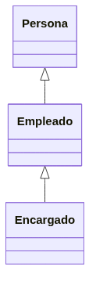

Desarrollo de clases¶

Al finalizar esta unidad serás capaz de...
- Diseñar clases completas con atributos y métodos
- Aplicar modificadores de acceso (public, private, protected)
- Sobrecargar métodos y constructores
- Implementar la ocultación de atributos (getters/setters)
- Crear constructores de copia
- Definir clases anidadas e internas
- Comprender los fundamentos de la herencia
- Utilizar el empaquetado de clases (paquetes)
Cómo estudiar esta unidad
Esta unidad retoma los conceptos de la Unidad 2: Utilización de Objetos y Clases y los amplía. Las secciones de repaso incluyen enlaces directos a UD02 para que puedas consultarlos si lo necesitas.
Si tienes claros los conceptos de la Unidad 2, ve directamente a las secciones marcadas como [NUEVO], que contienen los contenidos que no se vieron en UD02:
- Modificadores de acceso
- Modificadores en la declaración de un método
- Sobrecarga de operadores
- Ocultación de atributos. Métodos de acceso
- Ocultación de métodos
- Constructores de copia
- Clases Anidadas, Clases Internas
- Introducción a la herencia
- Conversión entre objetos (Casting)
- Acceso a métodos de la superclase
- Empaquetado de clases
Si por el contrario tienes dudas o lagunas, esta es la última oportunidad de afianzar estos conceptos: a partir de aquí, objetos y clases serán parte del día a día. Los enlaces te llevarán directamente al contenido de UD02 que necesitas repasar.
Introducción¶
Esta unidad retoma los conceptos de POO vistos en la Unidad 2 y los desarrolla en profundidad. A continuación se resumen los conceptos fundamentales; si necesitas repasarlos con más detalle, sigue los enlaces a UD02.
Repaso del concepto de objeto¶
Un objeto es una entidad con identidad (único y distinguible), estado (valores de sus atributos) y comportamiento (métodos que puede ejecutar). Los objetos son instancias concretas de una clase.
Repaso
Si necesitas refrescar estos conceptos, revisa Objetos y Clases en UD02 y las características de la POO.
El concepto de clase¶
Una clase es una plantilla que define los atributos y métodos comunes a un conjunto de objetos. A partir de una clase se crean objetos (instancias).
Repaso
Revisa el concepto de clase en UD02 si tienes dudas.
Estructura y miembros de una clase¶
En unidades anteriores ya se indicó que para declarar una clase en Java se usa la palabra reservada class. En la declaración de una clase vas a encontrar:
- Cabecera de la clase. Compuesta por una serie de modificadores de acceso, la palabra reservada
classy el nombre de la clase. - Cuerpo de la clase. En él se especifican los distintos miembros de la clase: atributos y métodos. Es decir, el contenido de la clase.
1 2 3 4 5 6 7 8 9 10 11
public class NombreDeLaClase [herencia] [interfaces] { // Atributos de la clase ... ... ... // Métodos de la clase ... ... ... }
Repaso
La sintaxis básica de declaración de una clase se explicó en Clases en UD02. Aquí nos centramos en los elementos avanzados de la cabecera y los modificadores.
Cabecera de una clase.¶
En general, la declaración de una clase puede incluir los siguientes elementos y en el siguiente orden:
- Modificadores tales como
public,abstractofinal. - El nombre de la clase (con la primera letra de cada palabra en mayúsculas, por convenio).
- El nombre de su clase padre (superclase), si es que se especifica, precedido por la palabra reservada
extends("extiende" o "hereda de"). - Una lista separada por comas de interfaces que son implementadas por la clase, precedida por la palabra reservada
implements("implementa"). - El cuerpo de la clase, encerrado entre llaves
{...}.
La sintaxis completa de una cabecera (los cuatro primeros puntos) queda de la forma:
1 | |
En el ejemplo anterior de la clase Punto teníamos la siguiente cabecera:
1 | |
En este caso no hay modificadores, ni indicadores de herencia, ni implementación de interfaces. Tan solo la palabra reservada class y el nombre de la clase. Es lo mínimo que puede haber en la cabecera de una clase.
La herencia y las interfaces las verás más adelante. Vamos a ver ahora cuáles son los modificadores que se pueden indicar al crear la clase y qué efectos tienen. Los modificadores de clase son:
1 | |
Veamos qué significado tiene cada uno de ellos:
- Modificador
public. Indica que la clase es visible (se pueden crear objetos de esa clase) desde cualquier otra clase. Es decir, desde cualquier otra parte del programa. Si no se especifica este modificador, la clase sólo podrá ser utilizada desde clases que estén en el mismo paquete. El concepto de paquete lo veremos más adelante. Sólo puede haber una clase public (clase principal) en un archivo.java. El resto de clases que se definan en ese archivo no serán públicas. - Modificador
abstract. Indica que la clase es abstracta. Una clase abstracta no es instanciable. Es decir, no es posible crear objetos de esa clase (habrá que utilizar clases que hereden de ella). En este momento es posible que te parezca que no tenga sentido que esto pueda suceder (si no puedes crear objetos de esa clase, ¿para qué la quieres?), pero puede resultar útil a la hora de crear una jerarquía de clases. Esto lo verás también más adelante al estudiar el concepto de herencia. - Modificador
final. Indica que no podrás crear clases que hereden de ella. También volverás a este modificador cuando estudies el concepto de herencia. Los modificadores final y abstract son excluyentes (sólo se puede utilizar uno de ellos).
Todos estos modificadores y palabras reservadas las iremos viendo poco a poco, así que no te preocupes demasiado por intentar entender todas ellas en este momento.
En el ejemplo anterior de la clase Punto tendríamos una clase que sería sólo visible (utilizable) desde el mismo paquete en el que se encuentra la clase (modificador de acceso por omisión o de paquete, o package). Desde fuera de ese paquete no sería visible o accesible. Para poder utilizarla desde cualquier parte del código del programa bastaría con añadir el atributo public:
1 2 3 | |
Cuerpo de una clase.¶
El cuerpo de una clase contiene la declaración de sus miembros:
- Atributos: datos que almacena cada objeto.
- Métodos: operaciones que se pueden realizar sobre el objeto.
Una clase no puede estar vacía: debe contener al menos un atributo o un método.
Repaso
Para más detalle sobre la estructura de una clase, consulta la Unidad 2.
Miembros estáticos o de clase¶
Los miembros declarados con static pertenecen a la clase, no a cada instancia. Se conocen como miembros estáticos o miembros de clase. Un atributo static es compartido por todos los objetos; un método static puede invocarse sin crear un objeto. Se estudiarán en detalle en las secciones de atributos estáticos y métodos estáticos.
Atributos¶
Los atributos (o variables miembro) son los datos que almacenan los objetos de una clase. Se declaran dentro de la clase y pueden ser de cualquier tipo (int, double, String, objetos, etc.).
1 | |
Repaso
La declaración básica de atributos se explicó en Atributos en UD02. A continuación nos centramos en los modificadores que pueden acompañar a un atributo.
Dentro de la declaración de un atributo puedes encontrar tres partes:
- Modificadores. Son palabras reservadas que permiten modificar la utilización del atributo (indicar el control de acceso, si el atributo es constante, si se trata de un atributo de clase, etc.). Los iremos viendo uno a uno.
- Tipo. Indica el tipo del atributo. Puede tratarse de un tipo primitivo (
int,char,boolean,double...) o bien de uno referenciado (objeto,array, etc.). - Nombre. Identificador único para el nombre del atributo. Por convenio se suelen utilizar las minúsculas. En caso de que se trate de un identificador que contenga varias palabras, a partir de la segunda palabra se suele poner la letra de cada palabra en mayúsculas. Por ejemplo:
primerValor,valor,puertaIzquierda,cuartoTrasero,equipoVecendor,sumaTotal,nombreCandidatoFinal, etc. Cualquier identificador válido de Java será admitido como nombre de atributo válido, pero es importante seguir este convenio para facilitar la legibilidad del código (todos los programadores de Java lo utilizan).
Como puedes observar, los atributos de una clase también pueden contener modificadores en su declaración (como sucedía al declarar la propia clase). Estos modificadores permiten indicar cierto comportamiento de una tributo a la hora de utilizarlo. Entre los modificadores de un atributo podemos distinguir:
- Modificadores de acceso. Indican la forma de acceso al atributo desde otra clase. Son modificadores excluyentes entre sí. Sólo se puede poner uno.
- Modificadores de contenido. No son excluyentes. Pueden aparecer varios a la vez.
- Otros modificadores:
transientyvolatile. El primero se utiliza para indicar que un atributo es transitorio (no persistente) y el segundo es para indicar al compilador que no debe realizar optimizaciones sobre esa variable. Es más que probable que no necesites utilizarlos en este módulo.
Aquí tienes la sintaxis completa de la declaración de un atributo teniendo en cuenta la lista de todos los modificadores e indicando cuáles son incompatibles unos con otros:
1 | |
Vamos a estudiar con detalle cada uno de ellos.
Modificadores de acceso [NUEVO]¶
Los modificadores de acceso disponibles en Java para un atributo son:
- Modificador de acceso
public. Indica que cualquier clase (por muy ajena o lejana que sea) tiene acceso a ese atributo. No es muy habitual declarar atributos públicos (public). - Modificador de acceso
protected. En este caso se permitirá acceder al atributo desde cualquier subclase (lo verás más adelante al estudiar la herencia) de la clase en la que se encuentre declarado el atributo, y también desde las clases del mismo paquete. - Modificador de acceso por omisión (o de paquete). Si no se indica ningún modificador de acceso en la declaración del atributo, se utilizará este tipo de acceso. Se permitirá el acceso a este atributo desde todas las clases que estén dentro del mismo paquete (
package) que esta clase (la que contiene el atributo que se está declarando). No es necesario escribir ninguna palabra reservada. Si no se pone nada se supone se desea indicar este modo de acceso. - Modificador de acceso
private. Indica que sólo se puede acceder al atributo desde dentro de la propia clase. El atributo estará "oculto" para cualquier otra zona de código fuera de la clase en la que está declarado el atributo. Es lo opuesto a lo que permitepublic.
A continuación puedes observar un resumen de los distintos niveles accesibilidad que permite cada modificador:
| modificador | Misma clase | Mismo paquete | Subclase | Otro paquete |
|---|---|---|---|---|
public | ✔ | ✔ | ✔ | ✔ |
protected | ✔ | ✔ | ✔ | ❌ |
Sin modificador (package) | ✔ | ✔ | ❌ | ❌ |
private | ✔ | ❌ | ❌ | ❌ |
Recuerda
¡Recuerda que los modificadores de acceso son excluyentes! Sólo se puede utilizar uno de ellos en la declaración de un atributo.
Modificadores de contenido.¶
Los modificadores de contenido no son excluyentes (pueden aparecer varios para un mismo atributo). Son los siguientes:
- Modificador
static. Hace que el atributo sea común para todos los objetos de una misma clase. Es decir, todos los objetos de la clase compartirán ese mismo atributo con el mismo valor. Es un caso de miembro estático o miembro de clase: un atributo estático o atributo de clase o variable de clase. - Modificador
final. Indica que el atributo es una constante. Su valor no podrá ser modificado a lo largo de la vida del objeto. Por convenio, el nombre de los atributos constantes (final) se escribe con todas las letras en mayúsculas.
En el siguiente apartado sobre atributos estáticos verás un ejemplo completo de un atributo estático (static). Veamos ahora un ejemplo de atributo constante (final).
Imagina que estás diseñando un conjunto de clases para trabajar con expresiones geométricas (figuras, superficies, volúmenes, etc.) y necesitas utilizar muy a menudo la constante pi con abundantes cifras significativas, por ejemplo, 3.14159265. Utilizar esa constante literal muy a menudo puede resultar tedioso además de poco operativo (imagina que el futuro hubiera que cambiar la cantidad de cifras significativas). La idea es declararla una sola vez, asociarle un nombre simbólico (un identificador) y utilizar ese identificador cada vez que se necesite la constante. En tal caso puede resultar muy útil declarar un atributo final con el valor 3.14159265 dentro de la clase en la que se considere oportuno utilizarla. El mejor identificador que podrías utilizar para ella será probablemente el propio nombre de la constante (y en mayúsculas, para seguir el convenio de nombres), es decir, PI.
Así podría quedar la declaración del atributo:
1 2 3 4 | |
Atributos estáticos.¶
Como ya has visto, el modificador static hace que el atributo sea común (el mismo) para todos los objetos de una misma clase. En este caso sí podría decirse que la existencia del atributo no depende de la existencia del objeto, sino de la propia clase y por tanto sólo habrá uno, independientemente del número de objetos que se creen. El atributo será siempre el mismo para todos los objetos y tendrá un valor único independientemente de cada objeto. Es más, aunque no exista ningún objeto de esa clase, el atributo sí existirá y podrá contener un valor (pues se trata de un atributo de la clase más que del objeto).
Uno de los ejemplos más habituales (y sencillos) de atributos estáticos o de clase es el de un contador que indica el número de objetos de esa clase que se han ido creando. Por ejemplo, en la clase de ejemplo Punto podrías incluir un atributo que fuera ese contador para llevar un registro del número de objetos de la clase Punto que se van construyendo durante la ejecución del programa.
Otro ejemplo de atributo estático (y en este caso también constante) que también se ha mencionado anteriormente al hablar de miembros estáticos era disponer de un atributo nombre, que contuviera un String con el nombre de la clase. Nuevamente ese atributo sólo tiene sentido para la clase, pues habrá de ser compartido por todos los objetos que sean de esa clase (es el nombre de la clase a la que pertenecen los objetos y por tanto siempre será la misma e igual para todos, no tiene sentido que cada objeto de tipo Punto almacene en su interior el nombre de la clase, eso lo debería hacer la propia clase).
1 2 3 4 5 | |
Obviamente, para que esto funcione como estás pensando, también habrá que escribir el código necesario para que cada vez que se cree un objeto de la clase Punto se incremente el valor del atributo cantidadPuntos.
Más información
Volverás a este ejemplo para implementar esa otra parte cuando estudies los constructores.
Métodos¶
Los métodos definen el comportamiento de los objetos y constituyen su interfaz. A continuación se detallan los elementos avanzados de su declaración.
Repaso
La sintaxis básica de declaración de métodos se explicó en Métodos en UD02.
Cabecera de método.¶
La declaración de un método puede incluir los siguientes elementos:
- Modificadores (como por ejemplo los ya vistos
publicoprivate, más algunos otros que irás conociendo poco a poco). No es obligatorio incluir modificadores en la declaración. - El tipo devuelto (o tipo de retorno), que consiste en el tipo de dato (primitivo o referencia) que el método devuelve tras ser ejecutado. Si eliges
voidcomo tipo devuelto, el método no devolverá ningún valor. - El nombre del método, aplicándose para los nombres el mismo convenio que para los atributos.
- Una lista de parámetros separados por comas y entre paréntesis donde cada parámetro debe ir precedido por su tipo. Si el método no tiene parámetros la lista estará vacía y únicamente aparecerán los paréntesis.
- Una lista de excepciones que el método puede lanzar. Se utiliza la palabra reservada
throwsseguida de una lista de nombres de excepciones separadas por comas. No es obligatorio que un método incluya una lista de excepciones, aunque muchas veces será conveniente. En unidades anteriores ya has trabajado con el concepto de excepción y más adelante volverás a hacer uso de ellas. - El cuerpo del método, encerrado entre llaves. El cuerpo contendrá el código del método (una lista sentencias y estructuras de control en lenguaje Java) así como la posible declaración de variables locales.
La sintaxis general de la cabecera de un método podría entonces quedar así:
1 | |
Como sucede con todos los identificadores en Java (variables, clases, objetos, métodos, etc.), puede usarse cualquier identificador que cumpla las normas. Ahora bien, para mejorar la legibilidad del código, se ha establecido el siguiente convenio para nombrar los métodos: utilizar un verbo en minúscula o bien un nombre formado por varias palabras que comience por un verbo en minúscula, seguido por adjetivos, nombres, etc. los cuales sí aparecerán en mayúsculas.
Algunos ejemplos de métodos que siguen este convenio podrían ser: ejecutar, romper, mover, subir, responder, obtenerX, establecerValor, estaVacio, estaLleno, moverFicha, subirPalanca, responderRapido, girarRuedaIzquierda, abrirPuertaDelantera, cambiarMarcha, etc.
En el ejemplo de la clase Punto, puedes observar cómo los métodos obtenerX y obtenerY siguen el convenio de nombres para los métodos, devuelven en ambos casos un tipo int, su lista de parámetros es vacía (no tienen parámetros) y no lanzan ningún tipo de excepción:
-
java abstract int obtenerX() -
java int obtenerY()
Modificadores en la declaración de un método [NUEVO]¶
En la declaración de un método también pueden aparecer modificadores (como en la declaración de la clase o delos atributos). Un método puede tener los siguientes tipos de modificadores:
- Modificadores de acceso. Son los mismos que en el caso de los atributos (por omisión o de paquete (
package),public,privateyprotected) y tienen el mismo cometido (acceso al método sólo por parte de clases del mismo paquete, o por cualquier parte del programa, o sólo para la propia clase, o también para las subclases). - Modificadores de contenido. Son también los mismos que en el caso de los atributos (
staticyfinal) aunque su significado no es el mismo. - Otros modificadores (no son aplicables a los atributos, sólo a los métodos):
abstract,native,synchronized.
Un método static es un método cuya implementación es igual para todos los objetos de la clase y sólo tendrá acceso a los atributos estáticos de la clase (dado que se trata de un método de clase y no de objeto, sólo podrá acceder a la información de clase y no la de un objeto en particular). Este tipo de métodos pueden ser llamados sin necesidad de tener un objeto de la clase instanciado.
En Java un ejemplo típico de métodos estáticos se encuentra en la clase Math, cuyos métodos son todos estáticos (Math.abs, Math.sin, Math.cos, etc.). Como habrás podido comprobar en este ejemplo, la llamada a métodos estáticos se hace normalmente usando el nombre de la propia clase y no el de una instancia (objeto), pues se trata realmente de un método de clase. En cualquier caso, los objetos también admiten la invocación de los métodos estáticos de su clase y funcionaría correctamente.
Un método final es un método que no permite ser sobrescrito por las clases descendientes de la clase a la quepertenece el método. Volverás a ver este modificador cuando estudies en detalle la herencia.
El modificador native es utilizado para señalar que un método ha sido implementado en código nativo (en un lenguaje que ha sido compilado a lenguaje máquina, como por ejemplo C o C++). En estos casos simplemente se indica la cabecera del método, pues no tiene cuerpo escrito en Java.
Un método abstract (método abstracto) es un método que no tiene implementación (el cuerpo está vacío). La implementación será realizada en las clases descendientes. Un método sólo puede ser declarado como abstract si se encuentra dentro de una clase abstract. También volverás a este modificador en unidades posteriores cuando trabajes con la herencia.
Por último, si un método ha sido declarado como synchronized, el entorno de ejecución obligará a que cuando un proceso esté ejecutando ese método, el resto de procesos que tengan que llamar a ese mismo método deberán esperar a que el otro proceso termine. Puede resultar útil si sabes que un determinado método va a poder ser llamado concurrentemente por varios procesos a la vez. Por ahora no lo vas a necesitar.
Dada la cantidad de modificadores que has visto hasta el momento y su posible aplicación en la declaración de clases, atributos o métodos, veamos un resumen de todos los que has visto y en qué casos pueden aplicarse:
| modificador | Clase | Atributo | Método |
|---|---|---|---|
| Sin modificador (package) | ✔ | ✔ | ✔ |
public | ✔ | ✔ | ✔ |
private | ❌ | ✔ | ✔ |
protected | ✔ | ✔ | ✔ |
static | ❌ | ✔ | ✔ |
final | ✔ | ✔ | ✔ |
synchronized | ❌ | ❌ | ✔ |
native | ❌ | ❌ | ✔ |
abstract | ✔ | ❌ | ✔ |
Parámetros en un método.¶
La lista de parámetros de un método se coloca tras el nombre del método. Esta lista estará constituida por pares de la forma <tipoParametro> <nombreParametro>. Cada uno de esos pares estará separado por comas y la lista completa estará encerrada entre paréntesis:
1 | |
Si la lista de parámetros es vacía, tan solo aparecerán los paréntesis:
1 | |
A la hora de declarar un método, debes tener en cuenta:
- Puedes incluir cualquier cantidad de parámetros. Se trata de una decisión del programador, pudiendo ser incluso una lista vacía.
- Los parámetros podrán ser de cualquier tipo (tipos primitivos, referencias, objetos, arrays, etc.).
- No está permitido que el nombre de una variable local del método coincida con el nombre de un parámetro.
- No puede haber dos parámetros con el mismo nombre. Se produciría ambigüedad.
- Si el nombre de algún parámetro coincide con el nombre de un atributo de la clase, éste será ocultado por el parámetro. Es decir, al indicar ese nombre en el código del método estarás haciendo referencia al parámetro y no al atributo. Para poder acceder al atributo tendrás que hacer uso del operador de autorreferencia
this, que verás un poco más adelante. - En Java el paso de parámetros es siempre por valor, excepto en el caso de los tipos referenciados (por ejemplo los objetos) en cuyo caso se está pasando efectivamente una referencia. La referencia (el objeto en sí mismo) no podrá ser cambiada pero sí elementos de su interior (atributos) a través de sus métodos o por acceso directo si se trata de un miembro público.
Es posible utilizar una construcción especial llamada varargs (argumentos variables) que permite que un método pueda tener un número variable de parámetros. Para utilizar este mecanismo se colocan unos puntos suspensivos (tres puntos: ...) después del tipo del cual se puede tener una lista variable de argumentos, un espacio en blanco y a continuación el nombre del parámetro que aglutinará la lista de argumentos variables.
1 | |
Es posible además mezclar el uso de varargs con parámetros fijos. En tal caso, la lista de parámetros variables debe aparecer al final (y sólo puede aparecer una). En realidad se trata una manera transparente de pasar un array con un número variable de elementos para no tener que hacerlo manualmente. Dentro del método habrá que ir recorriendo el array para ir obteniendo cada uno de los elementos de la lista de argumentos variables.
Cuerpo de un método¶
El cuerpo de un método contiene las sentencias que implementan su lógica: declaración de variables locales, estructuras de control, y la sentencia return (si el método no es void).
Repaso
Para más detalle, consulta Parámetros y valores devueltos en UD02.
Sobrecarga de métodos¶
En principio podrías pensar que un método puede aparecer una sola vez en la declaración de una clase (no se debería repetir el mismo nombre para varios métodos). Pero no tiene porqué siempre suceder así. Es posible tener varias versiones de un mismo método (varios métodos con el mismo nombre) gracias a la sobrecarga de métodos.
El lenguaje Java soporta la característica conocida como sobrecarga de métodos. Ésta permite declarar en una misma clase varias versiones del mismo método con el mismo nombre. La forma que tendrá el compilador de distinguir entre varios métodos que tengan el mismo nombre será mediante la lista de parámetros del método: si el método tiene una lista de parámetros diferente, será considerado como un método diferente (aunque tenga el mismo nombre) y el analizador léxico no producirá un error de compilación al encontrar dos nombres de método iguales en la misma clase.
Imagínate que estás desarrollando una clase para escribir sobre un lienzo que permite utilizar diferentes tipografías en función del tipo de información que se va a escribir. Es probable que necesitemos un método diferente según se vaya a pintar un número entero (int), un número real (double) o una cadena de caracteres (String). Una primera opción podría ser definir un nombre de método diferente dependiendo de lo que se vaya a escribir en el lienzo. Por ejemplo:
- Método
pintarEntero (int entero). - Método
pintarReal (double real). - Método
pintarCadena (double String). - Método
pintarEnteroCadena (int entero, String cadena).
Y así sucesivamente para todos los casos que desees contemplar...
La posibilidad que te ofrece la sobrecarga es utilizar un mismo nombre para todos esos métodos (dado que en el fondo hacen lo mismo: pintar). Pero para poder distinguir unos de otros será necesario que siempre exista alguna diferencia entre ellos en las listas de parámetros (bien en el número de parámetros, bien en el tipo de los parámetros). Volviendo al ejemplo anterior, podríamos utilizar un mismo nombre, por ejemplo pintar, para todos los métodos anteriores:
- Método
pintar (int entero). - Método
pintar (double real). - Método
pintar (double String). - Método
pintar (int entero, String cadena).
En este caso el compilador no va a generar ningún error pues se cumplen las normas ya que unos métodos son perfectamente distinguibles de otros (a pesar de tener el mismo nombre) gracias a que tienen listas de parámetros diferentes.
Lo que sí habría producido un error de compilación habría sido por ejemplo incluir otro método pintar (int entero), pues es imposible distinguirlo de otro método con el mismo nombre y con la misma lista de parámetros (ya existe un método pintar con un único parámetro de tipo int).
También debes tener en cuenta que el tipo devuelto por el método no es considerado a la hora de identificar un método, así que un tipo devuelto diferente no es suficiente para distinguir un método de otro. Es decir, no podrías definir dos métodos exactamente iguales en nombre y lista de parámetros e intentar distinguirlos indicando un tipo devuelto diferente. El compilador producirá un error de duplicidad en el nombre del método y no te lo permitirá.
Recuerda
Es conveniente no abusar de sobrecarga de métodos y utilizarla con cierta moderación (cuando realmente puede beneficiar su uso), dado que podría hacer el código menos legible.
Sobrecarga de operadores. [NUEVO]¶
Del mismo modo que hemos visto la posibilidad de sobrecargar métodos (disponer de varias versiones de un método con el mismo nombre cambiando su lista de parámetros), podría plantearse también la opción de sobrecargar operadores del lenguaje tales como +, ‐, *, ( ), <, >, etc. para darles otro significado dependiendo del tipo de objetos con los que vaya a operar.
En algunos casos puede resultar útil para ayudar a mejorar la legibilidad del código, pues esos operadores resultan muy intuitivos y pueden dar una idea rápida de cuál es su funcionamiento.
Un típico ejemplo podría ser el de la sobrecarga de operadores aritméticos como la suma (+) o el producto (*) para operar con fracciones. Si se definen objetos de una clase Fracción (que contendrá los atributos numerador y denominador) podrían sobrecargarse los operadores aritméticos (habría que redefinir el operador suma (+) para la suma, el operador asterisco (*) para el producto, etc.) para esta clase y así podrían utilizarse para sumar o multiplicar objetos de tipo Fraccion mediante el algoritmo específico de suma o de producto del objeto Fraccion (pues esos operadores no están preparados en el lenguaje para operar con esos objetos).
En algunos lenguajes de programación como por ejemplo C++ o C# se permite la sobrecarga, pero no es algo soportado en todos los lenguajes. ¿Qué sucede en el caso concreto de Java?
Importante
El lenguaje Java NO soporta la sobrecarga de operadores.
En el ejemplo anterior de los objetos de tipo Fracción, habrá que declarar métodos en la clase Fraccion que se encarguen de realizar esas operaciones, pero no lo podremos hacer sobrecargando los operadores del lenguaje (los símbolos de la suma, resta, producto, etc.). Por ejemplo:
1 2 | |
Y así sucesivamente...
Dado que en este módulo se está utilizando el lenguaje Java para aprender a programar, no podremos hacer uso de esta funcionalidad. Más adelante, cuando aprendas a programar en otros lenguajes, es posible que sí tengas la posibilidad de utilizar este recurso.
La referencia this.¶
La palabra reservada this consiste en una referencia al objeto actual. El uso de este operador puede resultar muy útil a la hora de evitar la ambigüedad que puede producirse entre el nombre de un parámetro de un método y el nombre de un atributo cuando ambos tienen el mismo identificador (mismo nombre). En tales casos el parámetro "oculta" al atributo y no tendríamos acceso directo a él (al escribir el identificador estaríamos haciendo referencia al parámetro y no al atributo). En estos casos la referencia this nos permite acceder a estos atributos ocultados por los parámetros.
Dado que this es una referencia a la propia clase en la que te encuentras en ese momento, puedes acceder a sus atributos mediante el operador punto (.) como sucede con cualquier otra clase u objeto. Por tanto, en lugar deponer el nombre del atributo (que estos casos haría referencia al parámetro), podrías escribir this.nombreAtributo, de manera que el compilador sabrá que te estás refiriendo al atributo y se eliminará la ambigüedad.
En el ejemplo de la clase Punto, podríamos utilizar la referencia this si el nombre del parámetro del método coincidiera con el del atributo que se desea modificar. Por ejemplo:
1 2 3 4 5 6 7 8 9 10 | |
En este caso ha sido indispensable el uso de this, pues si no sería imposible saber en qué casos te estás refiriendo al parámetro x y en cuáles al atributo x. Para el compilador el identificador x será siempre el parámetro, pues ha "ocultado" al atributo.
Más información
En algunos casos puede resultar útil hacer uso de la referencia this aunque no sea necesario, pues puede ayudara mejorar la legibilidad del código.
Métodos estáticos.¶
Como ya has visto en ocasiones anteriores, un método estático es un método que puede ser usado directamente desde la clase, sin necesidad de tener que crear una instancia para poder utilizar al método. También son conocidos como métodos de clase (como sucedía con los atributos de clase), frente a los métodos de objeto (es necesario un objeto para poder disponer de ellos).
Los métodos estáticos no pueden manipular atributos de instancias (objetos) sino atributos estáticos (de clase) y suelen ser utilizados para realizar operaciones comunes a todos los objetos de la clase, más que para una instancia concreta.
Algunos ejemplos de operaciones que suelen realizarse desde métodos estáticos:
- Acceso a atributos específicos de clase: incremento o decremento de contadores internos de la clase (
node instancias), acceso a un posible atributo de nombre de la clase, etc. - Operaciones genéricas relacionadas con la clase pero que no utilizan atributos de instancia. Por ejemplo una clase
NIF(oDNI) que permite trabajar con elDNIy la letra delNIFy que proporciona funciones adicionales para calcular la letraNIFde un número deDNIque se le pase como parámetro. Ese método puede ser interesante para ser usado desde fuera de la clase de manera independiente a la existencia de objetos de tipoNIF. Consulta el Ejemplo03 para una implementación completa.
En la biblioteca de Java es muy habitual encontrarse con clases que proporcionan métodos estáticos que pueden resultar muy útiles para cálculos auxiliares, conversiones de tipos, etc. Por ejemplo, la mayoría de las clases del paquete java.lang que representan tipos (Integer, String, Float, Double, Boolean, etc.) ofrecen métodos estáticos para hacer conversiones. Aquí tienes algunos ejemplos:
java static String valueOf(int i)
Devuelve la representación en formato String (cadena) de un valor int. Se trata de un método que no tiene que ver nada en absoluto con instancias de concretas de String, sino de un método auxiliar que puede servir como herramienta para ser usada desde otras clases. Se utilizaría directamente con el nombre de la clase. Por ejemplo:
-
java String enteroCadena = String.valueOf(23). -
java static String valueOf(float f)
Algo similar para un valor de tipo float. Ejemplo de uso:
-
java String floatCadena = String.valueOf(24.341) -
java static int parseInt(String s)
En este caso se trata de un método estático de la clase Integer. Analiza la cadena pasada como parámetro y la transforma en un int. Ejemplo de uso:
java int cadenaEntero=Integer.parseInt ("‐12")
Todos los ejemplos anteriores son casos en los que se utiliza directamente la clase como una especie de caja de herramientas que contiene métodos que pueden ser utilizados desde cualquier parte, por eso suelen ser métodos públicos.
Encapsulación, control de acceso y visibilidad.¶
Dentro de la Programación Orientada a Objetos ya has visto que es muy importante el concepto de ocultación, la cual ha sido lograda gracias a la encapsulación de la información dentro de las clases. De esta manera una clase puede ocultar parte de su contenido o restringir el acceso a él para evitar que sea manipulado de manera inadecuada. Los modificadores de acceso en Java permiten especificar el ámbito de visibilidad de los miembros de una clase, proporcionando así un mecanismo de accesibilidad a varios niveles.
Acabas de estudiar que cuando se definen los miembros de una clase (atributos o métodos), e incluso la propia clase, se indica (aunque sea por omisión) un modificador de acceso. En función de la visibilidad que se desee que tengan los objetos o los miembros de esos objetos se elegirá alguno de los modificadores de acceso que has estudiado. Ahora que ya sabes cómo escribir una clase completa (declaración de la clase, declaración de sus atributos y declaración de sus métodos), vamos a hacer un repaso general de las opciones de visibilidad (control de acceso) que has estudiado.
Los modificadores de acceso determinan si una clase puede utilizar determinados miembros (acceder a atributos o invocar miembros) de otra clase. Existen dos niveles de control de acceso:
- A nivel general (nivel de clase): visibilidad de la propia clase.
- A nivel de miembros: especificación, miembro por miembro, de su nivel de visibilidad.
En el caso de la clase, ya estudiaste que los niveles de visibilidad podían ser:
- Público (modificador
public), en cuyo caso la clase era visible a cualquier otra clase (cualquier otro fragmento de código del programa). - Privada al paquete (
package)(sin modificador o modificador "por omisión"). En este caso, la clase sólo será visible a las demás clases del mismo paquete, pero no al resto del código del programa (otros paquetes). - Protegido (
protected), lo podrán ver las clases del mismo paquete y también las clases herederas.
En el caso de los miembros, disponías de otras dos posibilidades más de niveles de accesibilidad, teniendo un total de cuatro opciones a la hora de definir el control de acceso al miembro:
- Público (modificador
public), igual que en el caso global de la clase y con el mismo significado (miembro visible desde cualquier parte del código). - Del paquete (sin modificador), también con el mismo significado que en el caso de la clase (miembro visible sólo desde clases del mismo paquete, ni siquiera será visible desde una subclase salvo si ésta está en el mismo paquete).
- Privado (modificador
private), donde sólo la propia clase tiene acceso al miembro. - Protegido (modificador
protected), lo podrán ver las clases del mismo paquete y también las clases herederas.
Ocultación de atributos. Métodos de acceso. [NUEVO]¶
Los atributos de una clase suelen ser declarados como privados a la clase o, como mucho, protected (accesibles también por clases heredadas), pero no como public. De esta manera puedes evitar que sean manipulados inadecuadamente (por ejemplo modificarlos sin ningún tipo de control) desde el exterior del objeto.
En estos casos lo que se suele hacer es declarar esos atributos como privados o protegidos y crear métodos públicos que permitan acceder a esos atributos. Si se trata de un atributo cuyo contenido puede ser observado pero no modificado directamente, puede implementarse un método de "obtención" del atributo (en inglés se les suele llamar método de tipo get) y si el atributo puede ser modificado, puedes también implementar otro método para la modificación o "establecimiento" del valor del atributo (en inglés se le suele llamar método de tipo set). Esto ya lo has visto en apartados anteriores.
Si recuerdas la clase Punto que hemos utilizado como ejemplo, ya hiciste algo así con los métodos de obtención y establecimiento de las coordenadas:
1 2 3 4 5 6 7 8 9 10 11 12 13 14 15 16 | |
Así, para poder obtener el valor del atributo x de un objeto de tipo Punto será necesario utilizar el métodoobtenerX() y no se podrá acceder directamente al atributo x del objeto. En algunos casos los programadores directamente utilizan nombres en inglés para nombrar a estos métodos:
1 | |
También pueden darse casos en los que no interesa que pueda observarse directamente el valor de un atributo, sino un determinado procesamiento o cálculo que se haga con el atributo (pero no el valor original). Por ejemplo podrías tener un atributo DNI que almacene los 8 dígitos del DNI pero no la letra del NIF (pues se puede calcular a partir de los dígitos). El método de acceso para el DNI (método getDNI) podría proporcionar el DNI completo (es decir, el NIF, incluyendo la letra), mientras que la letra no es almacenada realmente en el atributo del objeto. Algo similar podría suceder con el dígito de control de una cuenta bancaria, que puede no ser almacenado en el objeto, pero sí calculado y devuelto cuando se nos pide el número de cuenta completo.
En otros casos puede interesar disponer de métodos de modificación de un atributo pero a través de un determinado procesamiento previo para por ejemplo poder controlar errores o valores inadecuados. Volviendo al ejemplo del NIF, un método para modificar un DNI (método setDNI) podría incluir la letra (NIF completo), de manera que así podría comprobarse si el número de DNI y la letra coinciden (es un NIF válido). En tal caso se almacenará el DNI y en caso contrario se producirá un error de validación (por ejemplo lanzando una excepción). En cualquier caso, el DNI que se almacenara sería solamente el número y no la letra (pues la letra es calculable a partir del número de DNI).
Ocultación de métodos. [NUEVO]¶
Normalmente los métodos de una clase pertenecen a su interfaz y por tanto parece lógico que sean declarados como públicos. Pero también es cierto que pueden darse casos en los que exista la necesidad de disponer de algunos métodos privados a la clase. Se trata de métodos que realizan operaciones intermedias o auxiliares y que son utilizados por los métodos que sí forman parte de la interfaz. Ese tipo de métodos (de comprobación, de adaptación de formatos, de cálculos intermedios, etc.) suelen declararse como privados pues no son de interés (o no es apropiado que sean visibles) fuera del contexto del interior del objeto.
En el ejemplo anterior de objetos que contienen un DNI, será necesario calcular la letra correspondiente a un determinado número de DNI o comprobar si una determinada combinación de número y letra forman un DNI válido. Este tipo de cálculos y comprobaciones podrían ser implementados en métodos privados de la clase (o al menos como métodos protegidos).
1 2 3 4 5 6 7 8 9 | |
Utilización de los métodos y atributos de una clase¶
Una vez implementada una clase, se pueden crear objetos e interactuar con ellos. El ciclo de vida completo (declaración, instanciación, manipulación) se explicó en detalle en UD02.
Repaso
Consulta los siguientes apartados de la Unidad 2 según necesites: - Declaración de objetos - Instanciación (operador new) - Manipulación de objetos - Destrucción y recolector de basura
Constructores¶
Un constructor es un método especial con el mismo nombre de la clase que se ejecuta al crear un objeto. No devuelve ningún valor. Los constructores soportan sobrecarga.
Repaso
El concepto básico de constructor se explicó en Constructores en UD02.
Creación de constructores¶
Cuando se escribe una clase, se pueden definir uno o más constructores. En la definición se indica:
- El tipo de acceso (
public,private, etc.). - El nombre de la clase (obligatorio).
- La lista de parámetros.
- El cuerpo del constructor.
1 2 3 4 | |
Recuerda
Si defines constructores personalizados, el constructor por defecto (sin parámetros) deja de ser generado por el compilador. Debes crearlo tú si lo necesitas.
Los constructores soportan la sobrecarga, igual que los métodos. Consulta los Ejemplo01 y Ejemplo02 para ver implementaciones completas:
1 2 3 | |
Consulta el Ejemplo02 para ver una implementación con constructores sobrecargados y constructor de copia.
Utilización de constructores¶
1 2 | |
Creación de constructores.¶
Cuando se escribe el código de una clase normalmente se pretende que los objetos de esa clase se creen de una determinada manera. Para ello se definen uno o más constructores en la clase. En la definición de un constructor se indican:
- El tipo de acceso.
- El nombre de la clase (el nombre de un método constructor es siempre el nombre de la propia clase).
- La lista de parámetros que puede aceptar.
- Si lanza o no excepciones.
- El cuerpo del constructor (un bloque de código como el de cualquier método).
Como puedes observar, la estructura de los constructores es similar a la de cualquier método, con las excepciones de que no tiene tipo de dato devuelto (no devuelve ningún valor) y que el nombre del método constructor debe ser obligatoriamente el nombre de la clase.
Recuerda
Si defines constructores personalizados para una clase, el constructor por defecto (sin parámetros) para esa clase deja de ser generado por el compilador, de manera que tendrás que crearlo tú si quieres poder utilizarlo.
Si se ha creado un constructor con parámetros y no se ha implementado el constructor por defecto, el intento de utilización del constructor por defecto producirá un error de compilación (el compilador no lo hará por nosotros).
Un ejemplo de constructor para la clase Punto podría ser:
1 2 3 4 5 | |
En este caso el constructor recibe dos parámetros. Además de reservar espacio para los atributos (de lo cual se encarga automáticamente Java), también asigna sendos valores iniciales a los atributos x e y. Por último incrementa un atributo (probablemente estático) llamado cantidadPuntos.
Utilización de constructores.¶
Una vez que dispongas de tus propios constructores personalizados, la forma de utilizarlos es igual que con el constructor por defecto (mediante la utilización de la palabra reservada new) pero teniendo en cuenta que si has declarado parámetros en tu método constructor, tendrás que llamar al constructor con algún valor para esos parámetros. Un ejemplo de utilización del constructor que has creado para la clase Punto en el apartado anterior podría ser:
1 2 | |
En este caso no se estaría utilizando el constructor por defecto sino el constructor que acabas de implementar en el cual además de reservar memoria se asigna un valor a algunos de los atributos.
Constructores de copia. [NUEVO]¶
Una forma de iniciar un objeto podría ser mediante la copia de los valores de los atributos de otro objeto ya existente. Imagina que necesitas varios objetos iguales (con los mismos valores en sus atributos) y que ya tienes uno de ellos perfectamente configurado (sus atributos contienen los valores que tú necesitas). Estaría bien disponer de un constructor que hiciera copias idénticas de ese objeto.
Durante el proceso de creación de un objeto puedes generar objetos exactamente iguales(basados en la misma clase) que se distinguirán posteriormente porque podrán tener estados distintos (valores diferentes en los atributos). La idea es poder decirle a la clase que además de generar un objeto nuevo, que lo haga con los mismos valores que tenga otro objeto ya existente. Es decir, algo así como si pudieras clonar el objeto tantas veces como te haga falta. A este tipo de mecanismo se le suele llamar constructor copia o constructor de copia.
Un constructor copia es un método constructor como los que ya has utilizado pero con la particularidad de que recibe como parámetro una referencia al objeto cuyo contenido se desea copiar. Este método revisa cada uno de los atributos del objeto recibido como parámetro y se copian todos sus valores en los atributos del objeto que se está creando en ese momento en el método constructor.
Un ejemplo de constructor copia para la clase Punto podría ser:
1 2 3 4 | |
En este caso el constructor recibe como parámetro un objeto del mismo tipo que el que va a ser creado (clase Punto), inspecciona el valor de sus atributos (atributos x e y), y los reproduce en los atributos del objeto en proceso de construcción (this).
Un ejemplo de utilización de ese constructor podría ser:
1 2 3 | |
En este caso el objeto p2 se crea a partir de los valores del objeto p1.
Destrucción de objetos¶
Java gestiona la destrucción de objetos automáticamente mediante el recolector de basura (garbage collector). Los objetos que ya no tienen referencias son marcados para su eliminación.
Es posible implementar el método finalize() para liberar recursos antes de la destrucción:
1 | |
Repaso
El ciclo de vida y la destrucción de objetos se explican en Destrucción en UD02.
Clases Anidadas, Clases Internas (Inner Class) [NUEVO]¶
Clase Anidada (Nested Class):¶
Una clase anidada es una clase estática definida dentro de otra clase. Se declara con el modificador static.
Asociación:
- No tiene una relación directa con las instancias de la clase externa.
- Se puede acceder a ella sin necesidad de crear una instancia de la clase externa.
Contexto:
- Solo puede acceder a los miembros
staticde la clase externa. - No puede acceder a miembros de instancia (no estáticos) de la clase externa.
Uso común:
- Se utiliza cuando la clase anidada tiene un propósito independiente de las instancias de la clase externa.
Ejemplo:
1 2 3 4 5 6 7 8 | |
Así después podemos usarla en el catch accediendo directamente a la clase Empresa (ya que es static):
1 2 3 4 5 6 7 8 9 10 11 | |
Clase Interna (Inner Class):¶
Una clase interna es una clase no estática definida dentro de otra clase. No se declara con static.
Asociación:
- Está directamente asociada con una instancia de la clase externa.
- Para instanciarla, primero necesitas una instancia de la clase externa.
Contexto:
- Puede acceder a todos los miembros (estáticos y no estáticos) de la clase externa, incluso si son privados.
- La clase interna tiene una referencia implícita a la instancia de la clase externa.
Uso común:
- Se utiliza cuando la clase interna necesita interactuar con los miembros de instancia de la clase externa.
Puedes ver la implementación completa con una clase main de prueba en el Ejemplo08.
Comparación Resumida:¶
| Característica | Clase Anidada (Nested) | Clase Interna (Inner) |
|---|---|---|
| Es estática | Sí (static) | No (non-static) |
| Acceso a clase externa | Solo miembros static | Miembros estáticos y no estáticos |
| Asociación con clase externa | No está asociada a instancias | Está asociada a una instancia de la clase externa |
| Uso común | Lógica independiente de instancias de la clase externa | Lógica que necesita interactuar con la instancia externa |
| Instanciación | OuterClass.NestedClass nested = new OuterClass.NestedClass(); | OuterClass.InnerClass inner = outer.new InnerClass(); |
Convenciones comunes sobre el número de clases en un archivo:¶
-
Una clase pública por archivo: Es una convención estándar en Java que cada archivo .java debe contener solo una clase pública, y el nombre del archivo debe coincidir exactamente con el nombre de la clase pública (incluyendo mayúsculas y minúsculas). Esto es obligatorio para que el compilador de Java pueda encontrar las clases correctamente.
Ejemplo:
2. Clases no públicas en el mismo archivo:1 2 3 4
// Archivo: MiClase.java public class MiClase { // Código de la clase }Puedes incluir múltiples clases no públicas (con modificador default o package-private) en el mismo archivo, siempre que no haya más de una clase pública.
Ejemplo:
1 2 3 4 5 6 7 8
// Archivo: ClasePrincipal.java public class ClasePrincipal { // Código de la clase pública } class ClaseAuxiliar { // Código de la clase auxiliar }Sin embargo, esto no es una práctica común en proyectos grandes, ya que puede dificultar el mantenimiento y la localización de clases.
-
Separar clases auxiliares en archivos propios:
Aunque no es obligatorio, es una buena práctica colocar cada clase en su propio archivo, incluso si no es pública. Esto facilita:
- La localización y lectura de la clase.
- El control de versiones y la fusión de cambios en sistemas de control de código fuente.
- La prueba unitaria y el mantenimiento.
- Uso de clases anidadas:
Si una clase es relevante solo dentro del contexto de otra clase, considera usar una clase anidada o una clase interna en lugar de una clase separada.
Ejemplo:
1 2 3 4 5 6 7 8 9 10 11 | |
- Evitar clases no relacionadas en un solo archivo:
Colocar múltiples clases no relacionadas en un solo archivo se considera una mala práctica, ya que:
- Puede hacer que el archivo sea difícil de leer.
- Introduce acoplamiento innecesario entre clases.
- Viola el principio de responsabilidad única (SRP).
- Clases utilitarias:
Para clases con métodos estáticos (por ejemplo, Utils o Constants), es común colocarlas en un único archivo, ya que suelen ser pequeñas y no tienen lógica compleja.
Introducción a la herencia. [NUEVO]¶
La herencia es uno de los conceptos fundamentales que introduce la programación orientada a objetos. La idea fundamental es permitir crear nuevas clases aprovechando las características (atributos y métodos) de otras clases ya creadas evitando así tener que volver a definir esas características (reutilización).
A una clase que hereda de otra se le llama subclase o clase hija y aquella de la que se hereda es conocida como superclase o clase padre. También se puede hablar en general de clases descendientes o clases ascendientes. Al heredar, la subclase adquiere todas las características (atributos y métodos) de su superclase, aunque algunas de ellas pueden ser sobrescritas o modificadas dentro de la subclase (a eso se le suele llamar especialización).
Una clase puede heredar de otra que a su vez ha podido heredar de una tercera y así sucesivamente. Esto significa que las clases van tomando todas las características de sus clases ascendientes (no sólo de su superclase o clase padre inmediata) a lo largo de toda la rama del árbol de la jerarquía de clases en la que se encuentre.
Imagina que quieres modelar el funcionamiento de algunos vehículos para trabajar con ellos en un programa de simulación. Lo primero que haces es pensar en una clase Vehículo que tendrá un conjunto de atributos (por ejemplo: posición actual, velocidad actual y velocidad máxima que puede alcanzar el vehículo) y de métodos (por ejemplo: detener, acelerar, frenar, establecer dirección, establecer sentido).
Dado que vas a trabajar con muchos tipos de vehículos, no tendrás suficiente con esas características, así que seguramente vas a necesitar nuevas clases que las incorporen. Pero las características básicas que has definido en la clase Vehículo van a ser compartidas por cualquier nuevo vehículo que vayas a modelar. Esto significa que si creas otra clase podrías heredar de Vehículo todas esos atributos y propiedades y tan solo tendrías que añadir las nuevas.
Si vas a trabajar con vehículos que se desplazan por tierra, agua y aire, tendrás que idear nuevas clases con características adicionales. Por ejemplo, podrías crear una clase VehiculoTerrestre, que herede las características de Vehículo, pero que también incorpore atributos como el número de ruedas o la altura de los bajos). A su vez, podría idearse una nueva clase que herede de VehiculoTerrestre y que incorpore nuevos atributos y métodos como, por ejemplo, una clase Coche. Y así sucesivamente con toda la jerarquía de clases heredadas que consideres oportunas para representar lo mejor posible el entorno y la información sobre la que van a trabajar tus programas.
Creación y utilización de clases heredadas.¶
¿Cómo se indica en Java que una clase hereda de otra? Para indicar que una clase hereda de otra es necesario utilizar la palabra reservada extends junto con el nombre de la clase de la que se quieren heredar sus características:
1 2 3 | |
En el ejemplo anterior de los vehículos, la clase VehiculoTerrestre podría quedar así al ser declarada:
1 2 3 | |
Y en el caso de la clase Coche:
1 2 3 | |
En unidades posteriores estudiarás detalladamente cómo crear una jerarquía de clases y qué relación existe entre la herencia y los distintos modificadores de clases, atributos y métodos. Por ahora es suficiente con que entiendas el concepto de herencia y sepas reconocer cuándo una clase hereda de otra (uso de la palabra reservada extends).
Puedes comprobar que en las bibliotecas proporcionadas por Java aparecen jerarquías bastante complejas de clases heredadas en las cuales se han ido aprovechando cada uno de los miembros de una clase base para ir construyendo las distintas clases derivadas añadiendo (y a veces modificando) poco a poco nueva funcionalidad.
Eso suele suceder en cualquier proyecto de software conforme se van a analizando, descomponiendo y modelando los datos con los que hay que trabajar. La idea es poder representar de una manera eficiente toda la información que es manipulada por el sistema que se desea automatizar. Una jerarquía de clases suele ser una buena forma de hacerlo.
En el caso de Java, cualquier clase con la que trabajes tendrá un ascendiente. Si en la declaración de clase no indicas la clase de la que se hereda (no se incluye un extends), el compilador considerará automáticamente que se hereda de la clase Object, que es la clase que se encuentra en el nivel superior de toda la jerarquía de clases en Java (y que es la única que no hereda de nadie).
También irás viendo al estudiar distintos componentes de las bibliotecas de Java (por ejemplo en el caso de las interfaces gráficas) que para poder crear objetos basados en las clases proporcionadas por esas bibliotecas tendrás que crear tus propias clases que hereden de algunas de esas clases. Para ellos tendrás que hacer uso de la palabra reservada extends.
Recuerda
En Java todas las clases son descendientes (de manera explícita o implícita) de la clase Object.
Conversión entre objetos (Casting) [NUEVO]¶
La esencia de Casting permite convertir un dato de tipo primitivo en otro generalmente de más precisión.
Entre objetos es posible realizar el casting. Tenemos una clase persona con una subclase empleado y este a su vez una subclase encargado.

Si creamos una instancia de tipo persona y le asignamos un objeto de tipo empleado o encargado, al ser una subclase no existe ningún tipo de problema, ya que todo encargado o empleado es persona.
Por otro lado, si intentamos asignar valores a los atributos específicos de empleado o encargado nos encontramos con una pérdida de precisión puesto que no se pueden ejecutar todos los métodos de los que dispone un objeto de tipo empleado o encargado, ya que persona contiene menos métodos que la clase empleado o encargado. En este caso es necesario hacer un casting, sino el compilador dará error.
Ejemplo (Casting):
Si quieres ver la definición completa de la clase Persona dentro de su propio archivo, consulta el Ejemplo05.
La clase Empleado completa se muestra en el Ejemplo06.
Puedes ver la clase Encargado completa en el Ejemplo07.
1 2 3 4 5 6 7 8 9 10 11 12 13 14 15 16 17 18 19 20 21 22 23 | |
Las reglas a la hora de realizar casting es que:
- cuando se utiliza una clase más específicas (más abajo en la jerarquía) no hace falta casting. Es lo que llamamos casting implícito.
- cuando se utiliza una clase menos específica (más arriba en la jerarquía) hay que hacer un casting explícito.
¿Por qué se imprime con el método más especializado?
Debes entender que en realidad encargadoCarniceria es un Encargado que se disfraza de Persona, pero en realidad sus métodos son los especializados (el toString() más moderno sobrescribe al de sus padres. Recuerda que la anotación @override es opcional, y aunque no se indique el método sigue sobrescribiendo al de su padre)
Si por ejemplo usamos este fragmento:
1 2 3 | |
Se imprimirá con el método toString() de la clase Persona (sólo el nombre).
Y si hacemos un casting del objeto David a uno más genérico (Object) seguirá usando el método más especializado:
1 2 3 | |
Acceso a métodos de la superclase [NUEVO]¶
Para acceder a los métodos de la superclase se utiliza la sentencia super. La sentencia this permite acceder a los campos y métodos de la clase. La sentencia super permite acceder a los campos y métodos de la superclase. El uso de super lo hemos visto en las clases Empleado y Encargado anteriores:
1 2 3 4 5 6 7 | |
1 2 3 4 5 6 7 | |
1 2 3 4 5 6 7 | |
Podemos mostrar el nombre de la clase y el nombre de la clase de la que hereda con getClass() y getSuperclass(). Ejemplo:
1 2 3 4 5 6 7 8 9 10 11 12 | |
Empaquetado de clases [NUEVO]¶
Un paquete es un conjunto de clases relacionadas agrupadas bajo un mismo nombre, formando un nivel superior de encapsulación.
Repaso
Las sentencias package e import se introdujeron en Librerías de Objetos en UD02. Aquí se amplía la organización jerárquica de paquetes.
Jerarquía de paquetes.¶
Los paquetes en Java pueden organizarse jerárquicamente de manera similar a lo que puedes encontrar en la estructura de carpetas en un dispositivo de almacenamiento, donde:
- Las clases serían como los archivos.
- Cada paquete sería como una carpeta que contiene archivos (clases).
- Cada paquete puede además contener otros paquetes (como las carpetas que contienen carpetas).
- Para poder hacer referencia a una clase dentro de una estructura de paquetes, habrá que indicar la trayectoria completa desde el paquete raíz de la jerarquía hasta el paquete en el que se encuentra la clase, indicando por último el nombre de la clase (como el path absoluto de un archivo).
La estructura de paquetes en Java permite organizar y clasificar las clases, evitando conflictos de nombres y facilitando la ubicación de una clase dentro de una estructura jerárquica.
Por otro lado, la organización en paquetes permite también el control de acceso a miembros de las clases desde otras clases que estén en el mismo paquete gracias a los modificadores de acceso (recuerda que uno de los modificadores que viste era precisamente el de paquete).
Las clases que forman parte de la jerarquía de clases de Java se encuentran organizadas en diversos paquetes.
Todas las clases proporcionadas por Java en sus bibliotecas son miembros de distintos paquetes y se encuentran organizadas jerárquicamente. Dentro de cada paquete habrá un conjunto de clases con algún tipo de relación entre ellas. Se dice que todo ese conjunto de paquetes forman la API de Java. Por ejemplo las clases básicas del lenguaje se encuentran en el paquete java.lang, las clases de entrada/salida las podrás encontrar en el paquete java.io y en el paquete java.math podrás observar algunas clases para trabajar con números grandes y de gran precisión.
Utilización de los paquetes¶
Se accede a una clase mediante su nombre completo (ruta del paquete + nombre de clase) o mediante import.
Repaso
El uso de la sentencia import se explica en Sentencia import en UD02.
Inclusión de una clase en un paquete.¶
Al principio de cada archivo .java se puede indicar a qué paquete pertenece mediante la palabra reservada package seguida del nombre del paquete:
1 | |
1 2 3 4 | |
La sentencia package debe ser incluida en cada archivo fuente de cada clase que quieras incluir ese paquete. Si en un archivo fuente hay definidas más de una clase, todas esas clases formarán parte del paquete indicado en la sentencia package.
Si al comienzo de un archivo Java no se incluyen ninguna sentencia package, el compilador considerará que las clases de ese archivo formarán parte del paquete por omisión (un paquete sin nombre asociado al proyecto).
Para evitar la ambigüedad, dentro de un mismo paquete no puede haber dos clases con el mismo nombre, aunque sí pueden existir clases con el mismo nombre si están en paquetes diferentes. El compilador será capaz de distinguir una clase de otra gracias a que pertenecen a paquetes distintos.
Como ya has visto en unidades anteriores, el nombre de un archivo fuente en Java se construye utilizando el nombre de la clase pública que contiene junto con la extensión .java, pudiendo haber únicamente una clase pública por cada archivo fuente. El nombre de la clase debía coincidir (en mayúsculas y minúsculas) exactamente con el nombre del archivo en el que se encontraba definida.
Así, si por ejemplo tenías una clase Punto dentro de un archivo Punto.java, la compilación daría lugar a un archivo Punto.class.
En el caso de los paquetes, la correspondencia es a nivel de directorios o carpetas. Es decir, si la clase Punto se encuentra dentro del paquete prog.figuras, el archivo Punto.java debería encontrarse en la carpeta prog\figuras. Para que esto funcione correctamente el compilador ha de ser capaz de localizar todos los paquetes (tanto los estándar de Java como los definidos por otros programadores). Es decir, que el compilador debe tener conocimiento de dónde comienza la estructura de carpetas definida por los paquetes y en la cual se encuentran las clases. Para ello se utiliza el ClassPath cuyo funcionamiento habrás estudiado en las primeras unidades de este módulo. Se trata de una variable de entorno que contiene todas las rutas en las que comienzan las estructuras de directorios (distintas jerarquías posibles de paquetes) en las que están contenidas las clases.
Proceso de creación de un paquete.¶
Para crear un paquete en Java te recomendamos seguir los siguientes pasos:
- Poner un nombre al paquete. Suele ser habitual utilizar el dominio de Internet de la empresa que ha creado el paquete. Por ejemplo, para el caso de
miempresa.com, podría utilizarse un nombre de paquetecom.miempresa. - Crear una estructura jerárquica de carpetas equivalente a la estructura de subpaquetes. La ruta de la raíz de esa estructura jerárquica deberá estar especificada en el ClassPath de Java.
- Especificar a qué paquete pertenecen la clase (o clases) del archivo
.javamediante el uso de la sentencia package tal y como has visto en el apartado anterior.
Este proceso ya lo has debido de llevar a cabo en unidades anteriores al compilar y ejecutar clases con paquetes. Estos pasos simplemente son para que te sirvan como recordatorio del procedimiento que debes seguir a ala hora de clasificar, jerarquizar y utilizar tus propias clases.
Ejercicios resueltos¶
Modificadores de acceso¶
Imagina que quieres escribir una clase que represente un rectángulo en el plano. Para ello has pensado en los siguientes atributos:
- Atributos
x1,y1, que representan la coordenadas del vértice inferior izquierdo del rectángulo. Ambos de tipodouble(números reales). - Atributos
x2,y2, que representan las coordenadas del vértice superior derecho del rectángulo. También de tipodouble(números reales).
Con estos dos puntos (x1, y1) y (x2, y2) se puede definir perfectamente la ubicación de un rectángulo en el plano.
Escribe una clase que contenga todos esos atributos teniendo en cuenta que queremos que sea una clase visible desde cualquier parte del programa y que sus atributos sean también accesibles desde cualquier parte del código.
Respuesta: Dado que se trata de una clase que podrá usarse desde cualquier parte del programa, utilizaremos el modificador de acceso public para la clase:
1 | |
Los cuatro atributos que necesitamos también han de ser visibles desde cualquier parte, así que también se utilizará el modificador de acceso public para los atributos:
1 2 | |
De esta manera la clase completa quedaría:
1 2 3 4 | |
Atributos estáticos¶
Ampliar el ejercicio anterior del rectángulo incluyendo los siguientes atributos:
- Atributo
numRectangulos, que almacena el número de objetos de tipo rectángulo creados hasta el momento. - Atributo
nombre, que almacena el nombre que se le quiera dar a cada rectángulo. - Atributo
nombreFigura, que almacena el nombre de la clase, es decir, "Rectángulo". - Atributo
PI, que contiene el nombre de la constantePIcon una precisión de cuatro cifras decimales.
No se desea que los atributos nombre y numRectangulos puedan ser visibles desde fuera de la clase. Y además se desea que la clase sea accesible solamente desde su propio paquete.
Respuesta: Los atributos numRectangulos, nombreFigura y PI podrían ser estáticos pues se trata de valores más asociados a la propia clase que a cada uno de los objetos que se puedan ir creando. Además, en el caso de PI y nombreFigura, también podría ser un atributo final, pues se trata de valores únicos y constantes (3.1416 en el caso de PI y "Rectángulo" en el caso de nombreFigura).
Dado que no se desea que se tenga accesibilidad a los atributos nombre y numRectangulos desde fuera de la clase podría utilizarse el atributo private para cada uno de ellos.
Por último hay que tener en cuenta que se desea que la clase sólo sea accesible desde el interior del paquete al que pertenece, por tanto habrá que utilizar el modificador por omisión o de paquete. Esto es, no incluir ningún modificador de acceso en la cabecera de la clase.
Teniendo en cuenta todo lo anterior la clase podría quedar finalmente así:
1 2 3 4 5 6 7 8 9 10 11 | |
Cuerpo de un método¶
Vamos a seguir ampliando la clase en la que se representa un rectángulo en el plano (clase Rectangulo). Para ello has pensado en los siguientes métodos públicos:
- Métodos
getNombreysetNombre, que permiten el acceso y modificación del atributo nombre del rectángulo. - Método
calcularSuperfice, que calcula el área encerrada por el rectángulo. - Método
calcularPerímetro, que calcula la longitud del perímetro del rectángulo. - Método
desplazar, que mueve la ubicación del rectángulo en el plano en una cantidadX(para elejeX) y otra cantidadY(para el ejeY). Se trata simplemente de sumar el desplazamientoXa las coordenadasx1yx2, y el desplazamientoYa las coordenadasy1ey2. Los parámetros de entrada de este método serán por tantoXeY, de tipodouble. - Método
obtenerNumRectangulos, que devuelve el número de rectángulos creados hasta el momento.
Incluye la implementación de cada uno de esos métodos en la clase Rectangulo.
Respuesta: En el caso del método obtenerNombre(), se trata simplemente de devolver el valor del atributo nombre:
1 2 3 | |
Para el implementar el método establecerNombre también es muy sencillo. Se trata de modificar el contenido del atributo nombre por el valor proporcionado a través de un parámetro de entrada:
1 2 3 | |
Los métodos de cálculo de superficie y perímetro no van a recibir ningún parámetro de entrada, tan solo deben realizar cálculos a partir de los atributos contenidos en el objeto para obtener los resultados perseguidos. Encada caso habrá que aplicar la expresión matemática apropiada:
- En el caso de la
superficie, habrá que calcular la longitud de la base y la altura del rectángulo a partir de las coordenadas de las esquinas inferior izquierda (x1,y1) y superior derecha (x2,y2) de la figura. La base sería la diferencia entrex2yx1, y la altura la diferencia entrey2ey1. A continuación tan solo tendrías que utilizar la consabida fórmula de "base por altura", es decir, una multiplicación. - En el caso del
perímetrohabrá también que calcular la longitud de la base y de la altura del rectángulo y a continuación sumar dos veces la longitud de la base y dos veces la longitud de la altura.
En ambos casos el resultado final tendrá que ser devuelto a través de la sentencia return. También es aconsejable en ambos casos la utilización de variables locales para almacenar los cálculos intermedios (como la base o la altura).
1 2 3 4 5 6 7 8 9 10 11 12 13 14 15 16 17 18 19 20 21 22 23 | |
En el caso del método desplazar(), se trata de modificar:
- Los contenidos de los atributos
x1yx2sumándoles el parámetroX, - Los contenidos de los atributos
y1ey2sumándoles el parámetroY.
1 2 3 4 5 6 7 8 | |
En este caso no se devuelve ningún valor (tipo devuelto vacío: void).
Por último, el método obtenerNumRectangulos simplemente debe devolver el valor del atributo numRectangulos. En este caso es razonable plantearse que este método podría ser más bien un método de clase (estático) más que un método de objeto, pues en realidad es una característica de la clase más que algún objeto en particular. Para ello tan solo tendrías que utilizar el modificador de acceso static:
1 2 3 | |
Declaración de un objeto¶
Utilizando la clase Rectangulo implementada en ejercicios anteriores, indica como declararías tres objetos (variables) de esa clase llamados r1, r2, r3.
Respuesta Se trata simplemente de realizar una declaración de esas tres variables:
1 2 3 | |
También podrías haber declarado los tres objetos en la misma sentencia de declaración:
1 | |
Creación de un objeto¶
Ampliar el ejercicio anterior instanciando los objetos r1, r2, r3 mediante el constructor por defecto.
Respuesta Habría que añadir simplemente una sentencia de creación o instanciación (llamada al constructor mediante el operador new) por cada objeto que se desee crear:
1 2 3 4 | |
Manipulación de un objeto¶
Utilizar el ejemplo de los rectángulos para crear un rectángulo r1, asignarle los valores x1=0, y1=0, x2=10, y2=10, calcular su área y su perímetro y mostrarlos en pantalla.
Respuesta Se trata de declarar e instanciar el objeto r1, rellenar sus atributos de ubicación (coordenadas de las esquinas), e invocar a los métodos calcularSuperficie() y calcularPerimetro() utilizando el operador punto (.).
Por ejemplo:
1 2 3 4 5 6 7 | |
Por último faltaría mostrar en pantalla la información calculada, podemos añadir esta y más pruebas en un método main de la propia clase, o en el main de otra clase del mismo paquete, como prefieras.
Utilización de constructores¶
Vamos a ampliar el ejemplo anterior creando una clase RectanguloV2, ampliando sus funcionalidades añadiéndole tres constructores:
- Un constructor sin parámetros (para sustituir al constructor por defecto) que haga que los valores iniciales de las esquinas del rectángulo sean (0,0) y (1,1);
- Un constructor con cuatro parámetros,
x1,y1,x2,y2, que rellene los valores iniciales de los atributos del rectángulo con los valores proporcionados a través de los parámetros. - Un constructor con dos parámetros, base y altura, que cree un rectángulo donde el vértice inferior izquierdo esté ubicado en la posición (0,0) y que tenga una base y una altura tal y como indican los dos parámetros proporcionados.
Respuesta En el caso del primer constructor lo único que hay que hacer es "rellenar" los atributos x1, y1, x2, y2 con los valores 0, 0, 1, 1:
1 2 3 4 5 6 | |
Para el segundo constructor es suficiente con asignar a los atributos x1, y1, x2, y2 los valores de los parámetros x1, y1, x2, y2. Tan solo hay que tener en cuenta que al tener los mismos nombres los parámetros del método que los atributos de la clase, estos últimos son ocultados por los primeros y para poder tener acceso a ellos tendrás que utilizar el operador de autorrerferencia this:
1 2 3 4 5 6 | |
En el caso del tercer constructor tendrás que inicializar el vértice (x1, y1) a (0,0) y el vértice (x2, y2) a (0 + base, 0 + altura), es decir a (base, altura):
1 2 3 4 5 6 | |
Queda propuesto como ejercicio de ampliación la modificación de la clase Rectangulo, y ampliar el método main para usar las nuevas funcionalidades.
Referencia this¶
Añadir un método obtenerNombrev2 de la clase Rectangulov2 de ejercicios anteriores utilizando la referencia this.
Respuesta: Si utilizamos la referencia this en este método, entonces podremos utilizar como identificador del parámetro el mismo identificador que tiene el atributo (aunque no tiene porqué hacerse si no se desea):
1 2 3 | |
Constructores de copia¶
Añadir un constructor de copia al ejercicio de la clase Rectangulov2 usando referencias this.
Respuesta Se trata de añadir un nuevo constructor además de los tres que ya habíamos creado:
1 2 3 4 5 6 7 | |
Para usar este constructor basta con haber creado anteriormente otro Rectangulo para utilizarlo como base de la copia. Por ejemplo:
1 2 3 | |
Ocultación de métodos¶
Vamos a intentar implementar una clase DNI que incluya todo lo que has visto hasta ahora. Se desea crear una clase que represente un DNI español y que tenga las siguientes características:
-
La clase almacenará el número de
DNIen unint, sin guardar la letra, pues se puede calcular a partir del número. Este atributo será privado a la clase. Formato del atributo:private int numDNI. -
Para acceder al
DNIse dispondrá de dos métodos obtener (get), uno que proporcionará el número deDNI(sólo las cifras numéricas) y otro que devolverá elNIFcompleto (incluida la letra).
El formato del método será:
-
java public int obtenerDNI() -
java public String obtenerNIF() -
Para modificar el
DNIse dispondrá de dos métodos establecer (set), que permitirán modificar elDNI. Uno en el que habrá que proporcionar elNIFcompleto (número y letra). Y otro en el que únicamente será necesario proporcionar elDNI(las siete u ocho cifras). Si elDNI/NIFes incorrecto se debería lanzar algún tipo de excepción. El formato de los métodos (sobrecargados) será: -
java public void establecer (String nif) throws ... -
java public void establecer (int dni) throws ... -
La clase dispondrá de algunos métodos internos privados para calcular la letra de un número de
DNIcualquiera, para comprobar si unDNIcon su letra es válido, para extraer la letra de unNIF, etc. Aquellos métodos que no utilicen ninguna variable de objeto podrían declararse como estáticos (pertenecientes a la clase). Formato de los métodos: -
java private static char calcularLetraNIF (int dni) -
java private boolean validarNIF (String nif) -
java private static char extraerLetraNIF (String nif) -
java private static int extraerNumeroNIF (String nif)
Para calcular la letra NIF correspondiente a un número de DNI puedes consultar el artículo sobre el NIF de la Wikipedia
Respuesta:
Inténtalo por tu cuenta y cuando te quedes atascado tienes la solución en el Ejemplo03
Ejemplos UD05¶
Ejemplo01¶
Clase Rectangulo con miembros estáticos, de instancia y método main de prueba.
1 2 3 4 5 6 7 8 9 10 11 12 13 14 15 16 17 18 19 20 21 22 23 24 25 26 27 28 29 30 31 32 33 34 35 36 37 38 39 40 41 42 43 44 45 46 47 48 49 50 51 52 53 54 55 56 57 58 59 60 61 62 63 64 65 66 67 68 69 70 71 72 73 74 75 76 77 78 79 80 81 82 83 84 85 86 | |
Ejemplo02¶
Clase Rectangulov2 con constructores sobrecargados, constructor de copia y uso de this.
1 2 3 4 5 6 7 8 9 10 11 12 13 14 15 16 17 18 19 20 21 22 23 24 25 26 27 28 29 30 31 32 33 34 35 36 37 38 39 40 41 42 43 44 45 46 47 48 49 50 51 52 53 54 55 56 57 58 59 60 61 62 63 64 65 66 67 68 69 70 71 72 73 74 75 76 77 78 79 80 81 82 | |
1 2 3 4 5 6 7 8 9 10 11 12 13 14 15 16 17 18 19 20 21 22 23 24 25 26 27 28 29 30 31 32 33 34 35 36 37 38 39 40 41 42 43 44 45 46 47 48 | |
Ejemplo03¶
Clase DNI con métodos estáticos de validación, cálculo de letra NIF y encapsulación.
1 2 3 4 5 6 7 8 9 10 11 12 13 14 15 16 17 18 19 20 21 22 23 24 25 26 27 28 29 30 31 32 33 34 35 36 37 38 39 40 41 42 43 44 45 46 47 48 49 50 51 52 53 54 55 56 57 58 59 60 61 62 63 64 65 66 67 68 69 70 71 72 73 74 75 76 77 78 79 80 81 82 83 84 85 86 87 88 89 90 91 | |
Ejemplo04¶
Clase Casting que demuestra el casting implícito y explícito entre objetos de una jerarquía de herencia.
1 2 3 4 5 6 7 8 9 10 11 12 13 14 15 16 17 18 19 20 21 22 23 24 | |
Ejemplo05¶
Clase base Persona con atributo nombre, getter, setter y método toString.
1 2 3 4 5 6 7 8 9 10 11 12 13 14 15 16 17 18 19 20 21 22 23 24 | |
Ejemplo06¶
Clase derivada Empleado que hereda de Persona y añade el atributo sueldoBase.
1 2 3 4 5 6 7 8 9 10 11 12 13 14 15 16 17 18 19 20 21 22 23 24 25 | |
Ejemplo07¶
Clase derivada Encargado que hereda de Empleado y añade el atributo seccion.
1 2 3 4 5 6 7 8 9 10 11 12 13 14 15 16 17 18 19 20 21 22 23 24 25 | |
Ejemplo08¶
Clase ClasesAnidadas con clases internas Monitor y Cpu dentro de la clase Pc.
1 2 3 4 5 6 7 8 9 10 11 12 13 14 15 16 17 18 19 20 21 22 23 24 25 26 27 28 29 30 31 32 33 34 35 36 37 38 39 40 41 42 43 | |
Resumen — Conceptos clave¶
| Concepto | Definición |
|---|---|
| Modificador de acceso | Palabra clave que controla la visibilidad (public, private, protected) |
| Sobrecarga | Varios métodos con el mismo nombre pero diferentes parámetros |
| Getter/Setter | Métodos que permiten acceder y modificar atributos privados |
| Constructor de copia | Constructor que crea un objeto copiando los valores de otro |
| Clase interna | Clase definida dentro de otra clase |
| Paquete | Agrupación de clases relacionadas |
Autoevaluación¶
- Diseño clases con atributos privados y métodos públicos
- Aplico correctamente los modificadores de acceso
- Sobrecargo métodos y constructores
- Implemento getters y setters
- Comprendo el concepto de clase interna
- Organizo mis clases en paquetes
Vídeos recomendados¶
| Canal | Vídeo | Contenido |
|---|---|---|
| Programación ATS | Herencia en POO (vídeo 74) | Herencia entre clases |
| Programación ATS | Polimorfismo en POO (vídeo 77) | Polimorfismo y enlace dinámico |
| Programación ATS | Playlist POO Java | Vídeos 73–82: clases abstractas (76), interfaces, modificadores de acceso |
| Píldoras Informáticas | Herencia I (vídeo 40) | Introducción a la herencia |
| Píldoras Informáticas | Interfaces I–IV (vídeos 49–52) | Interfaces y clases internas |
| BitBoss | Los 4 pilares de POO | Abstracción, encapsulación, herencia, polimorfismo (10 min) |
| MoureDev | Curso Completo de Java desde Cero | Sección POO (herencia, interfaces, polimorfismo) |